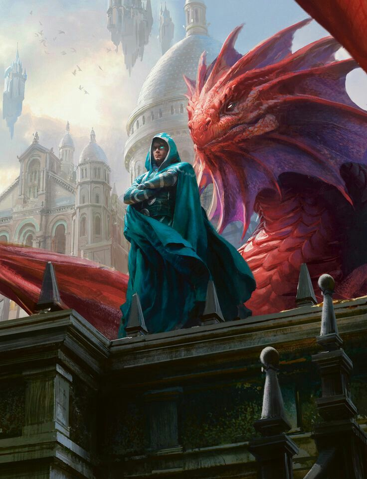
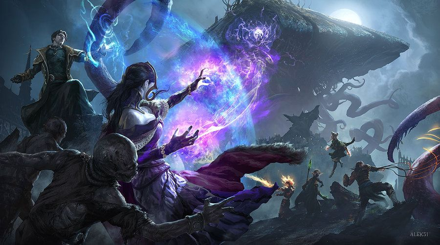
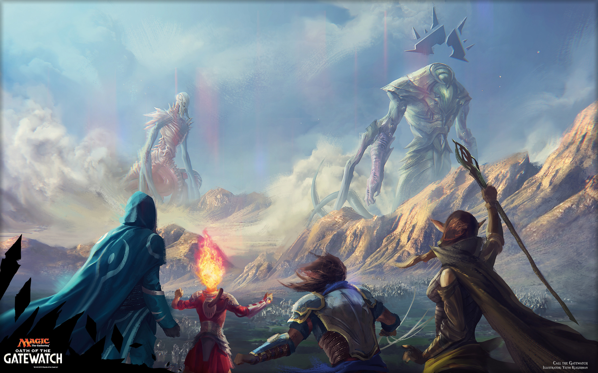
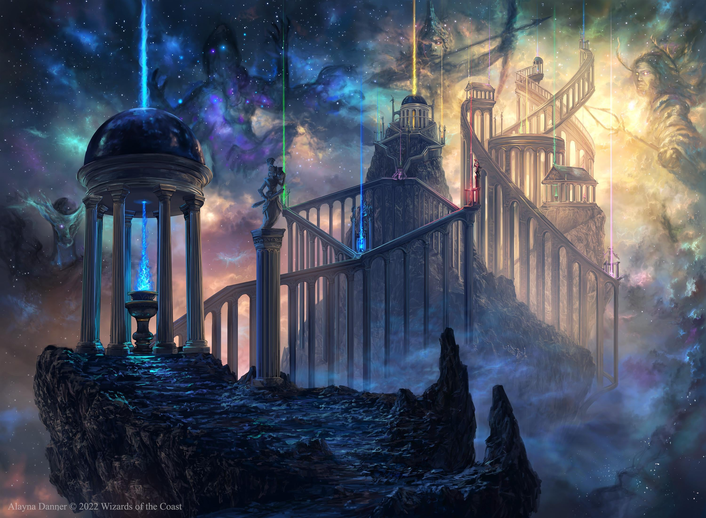
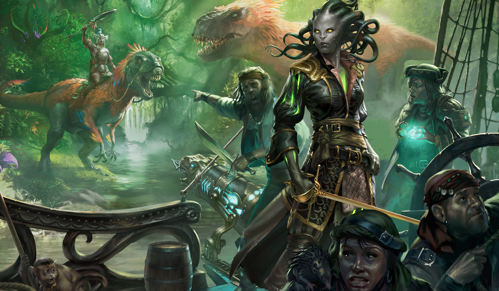
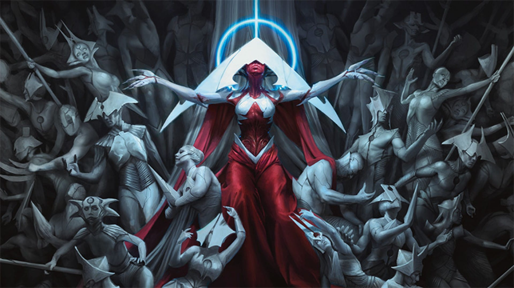
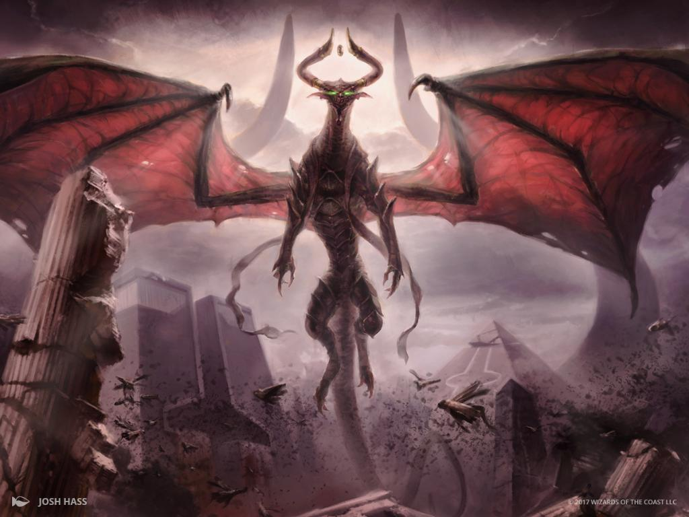
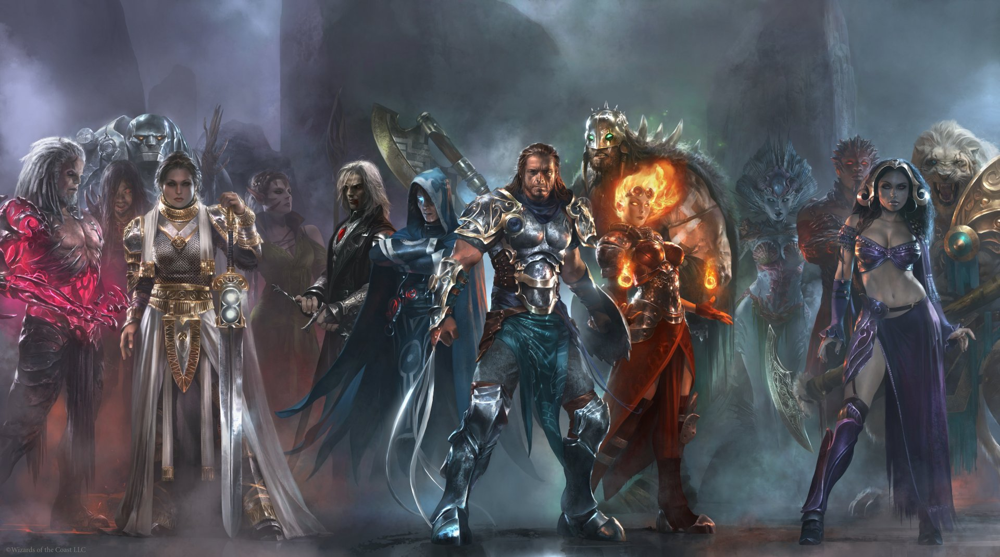

História
A história do Magic: The Gathering (MTG) é ambientada em um multiverso fictício, com diversos mundos conhecidos como "planos". Cada plano tem sua própria cultura, criaturas e magias, e os jogadores de Magic assumem o papel de planeswalkers, seres poderosos capazes de viajar entre esses planos usando sua habilidade mágica. A criação do universo de MTG começa com antes da criação do multiverso, onde havia um ser conhecido como Aeternus, o Ser do Caos. Ele procurava a ordem e, para isso, criou os "Eternos", seres que possuíam a capacidade de gerar planos. Esses planos seriam as primeiras versões dos mundos de MTG.
Planos e Histórias Importantes:

Dominaria: O plano mais central e significativo, onde muitas das histórias de Magic se desenrolam. Foi o local da grande guerra entre Urza e Mishra, conhecida como A Guerra dos Irmãos, que destruiu partes significativas do mundo e deu origem ao apocalipse de Dominaria. Urza também desempenhou um papel vital na luta contra Yawgmoth, um deus do mundo de Phyrexia.

Ravnica: Um mundo governado por guildas, onde as diferentes facções de magos competem pelo poder e recursos. O plano de Ravnica tem uma história rica de intriga política e rivalidade entre as guildas.

Innistrad: Um mundo sombrio e gótico, inspirado em mitologia de terror, com vampiros, lobisomens e zumbis. A história de Innistrad gira em torno de luta contra forças das trevas, como o deus Emrakul, que corrompe os habitantes.

Zendikar: Um mundo onde a magia selvagem é poderosa e imprevisível, com uma natureza exuberante e paisagens extraordinárias. O plano foi devastado por entidades chamadas Eldrazi, poderosas criaturas cósmicas que ameaçam destruir o multiverso.

Theros: Inspirado na mitologia grega, Theros é um plano onde deuses e heróis interagem em batalhas épicas. Ele foca nas influências dos deuses sobre os mortais e a luta contra a fatalidade.

Ixalan: Um mundo tropical, com dinossauros, piratas e civilizações antigas. O plano é marcado pela busca pelo Jade, um artefato poderoso que pode mudar o destino do mundo.
Fases da História

O Conflito de Phyrexia: Uma das narrativas centrais da história de MTG envolve a guerra contra Phyrexia, uma ameaça mecânica e apocalíptica, cujo objetivo é dominar todos os planos. Planeswalkers como Urza, Teferi e outros se uniram para lutar contra esse mal.

A Ascensão de Nicol Bolas: Um dos maiores vilões de Magic, Nicol Bolas, é um dragão planeswalker que deseja governar todo o multiverso. Sua história é um dos eixos principais nas últimas expansões, onde ele tenta manipular outros planeswalkers para alcançar seu domínio total.

O Papel dos Planeswalkers
Os planeswalkers são seres capazes de viajar entre planos e possuem habilidades mágicas únicas. Cada planeswalker tem sua própria história, personalidade e motivações. Alguns, como Chandra Nalaar, Jace Beleren e Liliana Vess, são personagens centrais nas narrativas de Magic.
Atualidade
A história do multiverso de Magic continua se expandindo através das edições lançadas, com novas tramas envolvendo ameaças, alianças e batalhas épicas entre planeswalkers. A narrativa se adapta e evolui à medida que novos planos e personagens são introduzidos, mantendo os fãs envolvidos em uma complexa tapeçaria de magia e aventura.
Magic: The Gathering não é apenas um jogo de cartas, mas uma rica narrativa onde os planos, suas histórias e os personagens interagem de maneiras profundas, criando uma experiência dinâmica e cheia de descobertas.